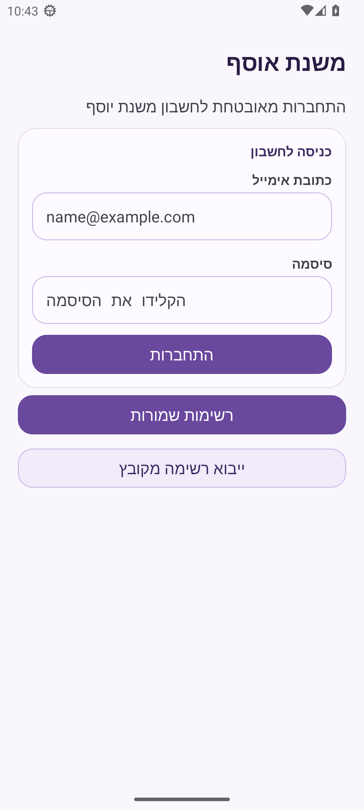
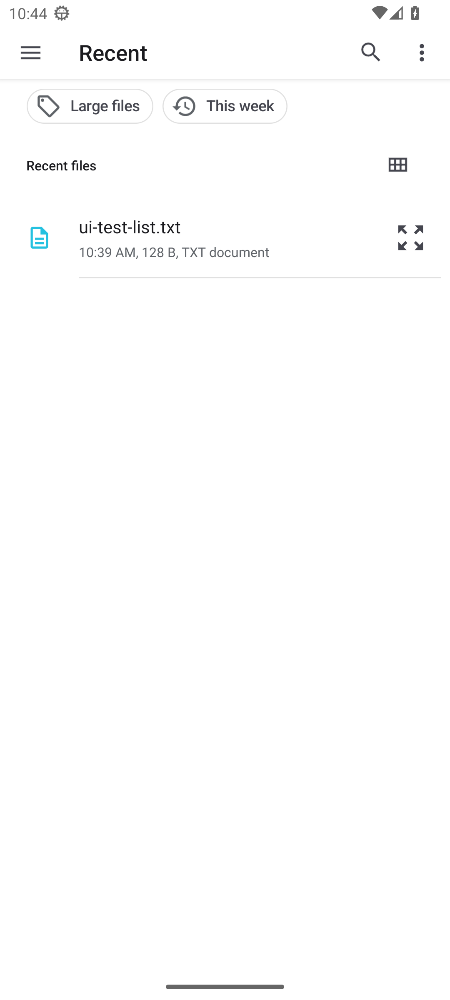
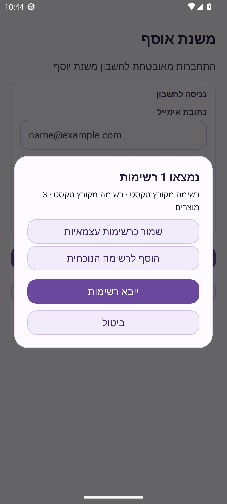
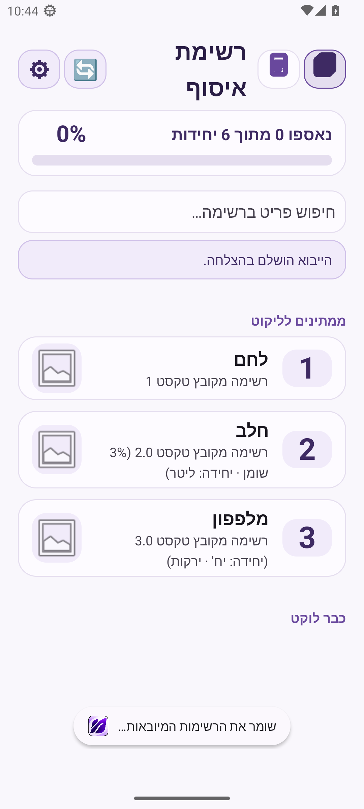
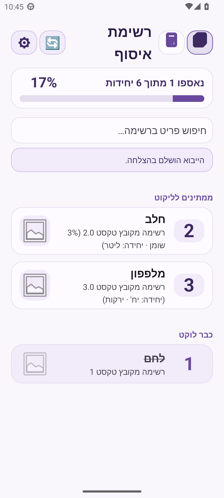
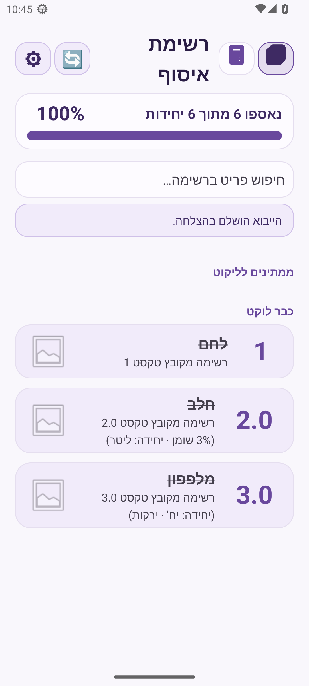

Package org.mishnatyosef.pickup · {"model": "sdk_gphone64_x86_64", "sdk": "33", "release": "13", "abi": "x86_64", "locale": "", "screen": "1080x2400"}
| # | Action | Detail | Result | Error |
|---|---|---|---|---|
| 1 | clear_data | passed | ||
| 2 | push | src='fixtures/ui-test-list.txt', dest='/sdcard/Download/ui-test-list.txt' | passed | |
| 3 | launch | passed | ||
| 4 | wait_for | text='כניסה לחשבון' | passed | |
| 5 | screenshot | name='login' | passed | |
| 6 | assert_text | text='משנת אוסף' | passed | |
| 7 | assert_text | text='רשימות שמורות' | passed | |
| 8 | scroll_to | text='ייבוא רשימה מקובץ' | passed | |
| 9 | tap | text='ייבוא רשימה מקובץ' | passed | |
| 10 | wait | seconds=3 | passed | |
| 11 | screenshot | name='file-picker' | passed | |
| 12 | tap | file shown directly (Recent) | passed | |
| 13 | tap | otherwise open the picker drawer | skipped | element not found within 3s: desc='Show roots' |
| 14 | tap | text='Downloads' | skipped | element not found within 4s: text='Downloads' |
| 15 | tap | text='ui-test-list' | skipped | element not found within 8s: text='ui-test-list' |
| 16 | wait_for | text='נמצאו 1 רשימות' | passed | |
| 17 | screenshot | name='import-summary' | passed | |
| 18 | tap | text='ייבא רשימות' | passed | |
| 19 | wait_for | text='נאספו 0 מתוך 6' | passed | |
| 20 | screenshot | name='list-imported' | passed | |
| 21 | tap | text='לחם' | passed | |
| 22 | assert_text | text='נאספו 1 מתוך 6' | passed | |
| 23 | screenshot | name='one-collected' | passed | |
| 24 | tap | text='חלב' | passed | |
| 25 | assert_text | text='נאספו 3 מתוך 6' | passed | |
| 26 | tap | text='מלפפון' | passed | |
| 27 | wait_for | text='הידד' | failed | element not found within 6s: text='הידד' |





